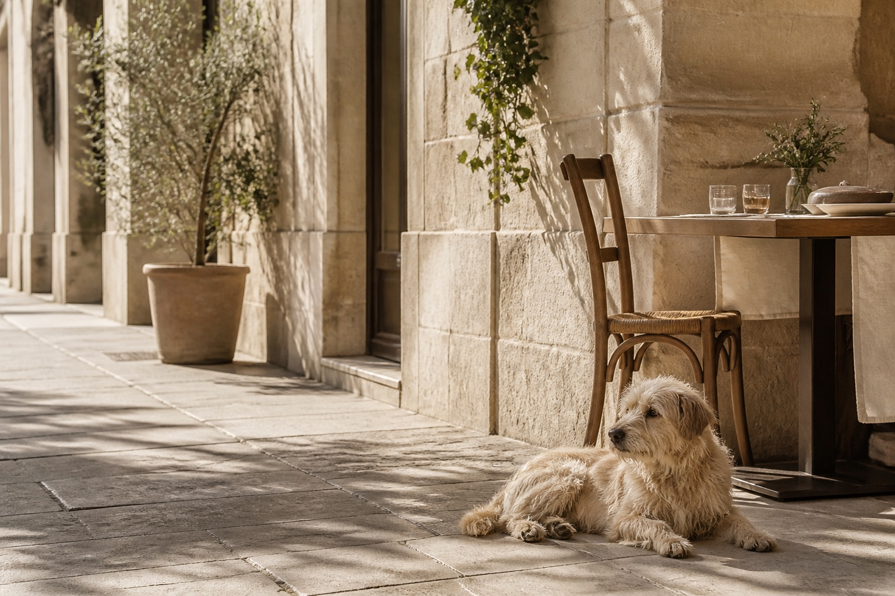
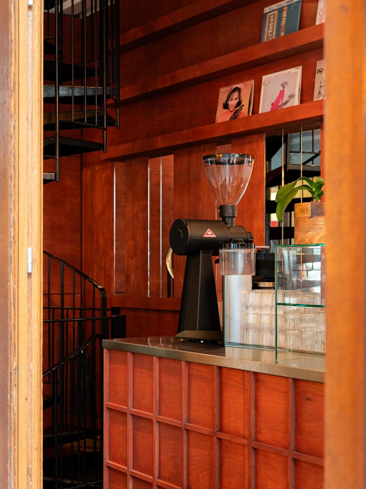

Klear Labs
Bakery · Specialty Coffee · Golborne Road
A recommended London stop from The Dog Friendly Guide collection.
City Edition · London
Our curated selection of beautiful dog-friendly places in London.
Save on Google Maps4 recommendations
Bakery · Specialty Coffee · Golborne Road
A recommended London stop from The Dog Friendly Guide collection.
Specialty coffee · Broadway Market
A minimal Japanese coffee bar with beans roasted in-house and a small terrace at the heart of East London.
Café · Covent Garden
A warm Australian–South American café for thoughtful coffee, colourful brunch plates and an unhurried city pause.
Specialty coffee · Belgravia
A light-filled café and coffee academy serving seasonal single origins, an all-day menu and evening aperitivo.


